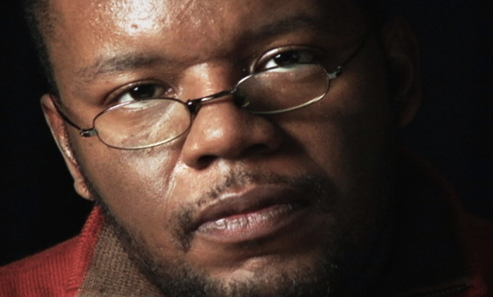

Learn More About Plagiarism
Plagiarism, often described as intellectual theft, involves using someone else’s work, ideas, or expressions without proper acknowledgment. It is a serious ethical offense in academic, professional, and creative fields, as it undermines originality and violates the principles of integrity and fairness. While many understand the basic definition of plagiarism, the nuances, consequences, and preventive measures are often overlooked. Plagiarism is a serious offense that has led to significant consequences for various individuals across different sectors. Below are some notable reported cases of plagiarism and the resulting
| Image | Case | Incident | Consequences |
|---|---|---|---|
|  | Jayson Blair (The New York Times) | Jayson Blair, a reporter for The New York Times, was found to have plagiarized and fabricated quotes in over 36 stories between 2000 and 2003. His work included lifting passages from other newspapers, fabricating interviews, and submitting fake information. | Blair resigned from The New York Times, and the newspaper published a lengthy public apology. His actions led to the implementation of stricter editorial guidelines in the newsroom, and Blair’s journalistic career was effectively ruined. |
| Kaavya Viswanathan (Author) | In 2006, Kaavya Viswanathan, an American author, was accused of plagiarizing passages from two novels by Megan McCafferty in her debut novel How Opal Mehta Got Kissed, Got Wild, and Got a Life. The similarities were discovered after her book became a bestseller. | The publisher, Little, Brown and Company, recalled the book, and Viswanathan was forced to publicly apologize. She also faced a legal settlement and was dropped by her publisher, damaging her writing career. | |
| Christine Lagarde (Former Managing Director of the IMF) | In 2003, Christine Lagarde, the former Managing Director of the International Monetary Fund (IMF), was accused of plagiarizing parts of a speech she delivered at a meeting in Geneva. Her speech contained verbatim excerpts from another speech given by a colleague at the European Union. | The IMF did not impose any formal punishment, but the incident led to public criticism of Lagarde's credibility. While her career was not damaged in the long term, the incident raised questions about her leadership and integrity. |
These cases reflect how plagiarism, whether accidental or deliberate, can lead to significant professional and personal consequences, including loss of credibility, career setbacks, and public backlash. The severity of the punishment often depends on the individual’s status and the context in which the plagiarism occurred. The punishment for plagiarism and intellectual property (IP) violations varies across different countries, reflecting their legal systems, cultural attitudes toward creativity, and the importance they place on protecting intellectual property. While there are common trends, the specific penalties and enforcement mechanisms differ depending on national IP laws. Here's an overview of the nature of the punishment for plagiarism and IP violations in different countries:
| Country | Civil Penalties | Criminal Penalties | Consequences |
|---|---|---|---|
| United States | Penalties: If the plagiarized work is copyrighted, the infringer may be subject to civil lawsuits. The plaintiff can claim statutory damages ranging from $750 to $30,000 per work infringed, and in cases of willful infringement, the damages can increase to $150,000 per work. Additionally, the infringer may be ordered to pay the plaintiff's attorney' | In cases of willful copyright infringement, criminal penalties can apply. These may include fines of up to $250,000 and imprisonment for up to five years for first-time offenders, with harsher sentences for repeat offenders. | Consequences: In addition to legal penalties, plagiarism can lead to reputational damage, loss of professional opportunities, and academic sanctions. |
| United Kingdom | Penalties: In the UK, plagiarism is primarily addressed through civil law. The aggrieved party can seek damages for financial losses caused by the infringement, as well as an injunction to prevent further unauthorized use of their work. | For serious cases, especially involving the unauthorized reproduction or distribution of copyrighted works, criminal penalties can include fines and imprisonment for up to 10 years. | Consequences: Plagiarism can result in legal action, reputational damage, and academic or professional sanctions, affecting the individual's career prospects and credibility. |
| India | Penalties: In India, plagiarism is primarily addressed through civil law. The aggrieved party can seek damages for financial losses caused by the infringement, as well as an injunction to prevent further unauthorized use of their work. | For serious cases, especially involving the unauthorized reproduction or distribution of copyrighted works, criminal penalties can include fines and imprisonment for up to 10 years. | Consequences: Plagiarism can result in legal action, reputational damage, and academic or professional sanctions, affecting the individual's career prospects and credibility. |